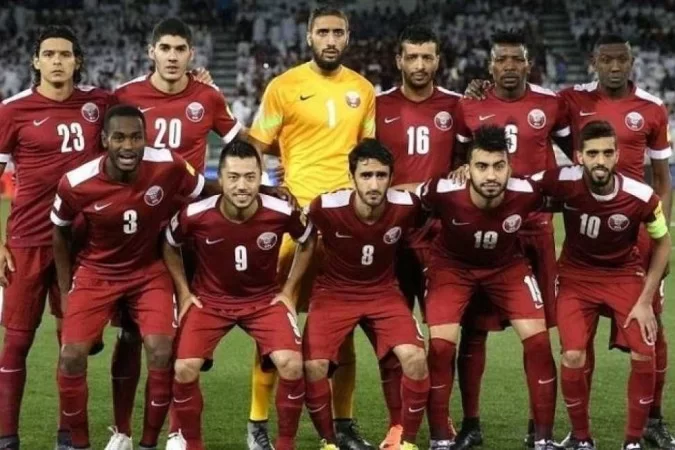

COPAS QUE JÁ PARTICIPOU:
Terá sua primeira Copa do Mundo em 2022.

PREMIAÇÕES QUE JÁ ALCANÇOU
Em 2019, o Catar conquistou o título mais importante de sua história, a Copa da Ásia de 2019, vencendo o Japão, por 3–1. A final foi disputada em Dubai, nos Emirados Árabes Unidos.
NOME DO TÉCNICO:
Félix Sánchez Bas
PRINCIPAIS JOGADORES
Al-Haydos
Muntari
Afif
Tabela de jogos
| Data/Hora | Estádio | Adversário |
|---|---|---|
| 21 nov 2022 / 19h00 | Estádio Al Bayt | Equador |
| 25 nov 2022 / 16h00 | Estádio Al Thumama | Senegal |
| 29 nov 2022 / 18h00 | Estádio Al Bayt | Países Baixos |